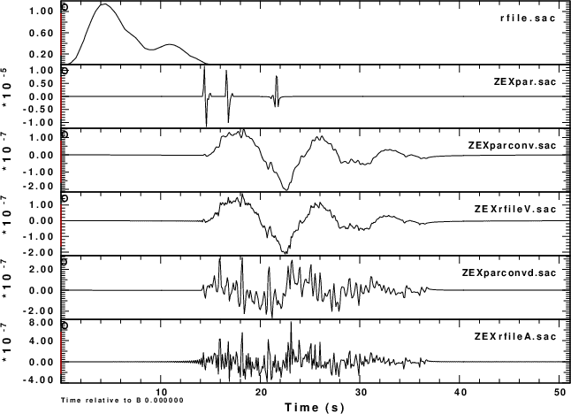
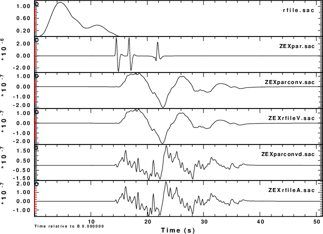

Tian Mengnam noted a problem when using cpulse96 with an external waveform file. The program did not work. The source file has since been corrected. This note provides an opportunity to demonstrate the use of the external file and to offer an alternative, perhaps better method to apply a user provided source pulse.
The shell script DOIT runs the code and also creates the user provided rfile. In addition, a FORTRAN program rfile2sac.f was created to convert the text rfile to a Sac file named rfile.sac. To use this FORTRAN program, compile it by the command
gfortran rfilesac.f
Download this shell script DOCMP and then execute everything:
chmod +x DOIT chmod +x DOCMP DOIT DOCMP
DOCMP runs the CPS codes but also uses the ImageMagick package to convert EPS to PNG. If you do not have ImageMagick installed, you can view the comparison with the command:
plotxvig < P001.PLT plotxvig < P002.PLT
DOCMP creates some Sac files and then plots them for comparison. These files, int he order shown in the figures, are as follow:
|  |
This has shown that the external user supplied pulse can be applied either directory using cpulse96 or by convolving with gsac. I prefer the latter since the advantage of the cpulse96 -V -p l 1 is that the signal spectrum is zero at the Nyquist frequency, thus yielding a signal without a Gibb's phenomena.
The next figure shows the result of lpwpass filtering all signals at 1.0 Hz. Note the similarity of the second and third traces, and the fourth and fifth traces.
|  |
This example demonstrates the the -F rfile command works for this program.